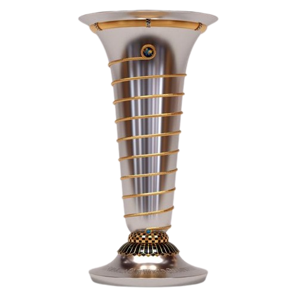

Segundo WDC
17-1-26
Primer mote de piloto: Aqui nos empezamos a llamar 'yaya' y 'nene'.
Sentimiento
Cuando empezamos a hablar con tanta confianza al punto de llegar a ponernos esos motes, me dio la motivacion de seguir conociendote más porque sabia que eras la mujer con la que me quiero casar en un futuro